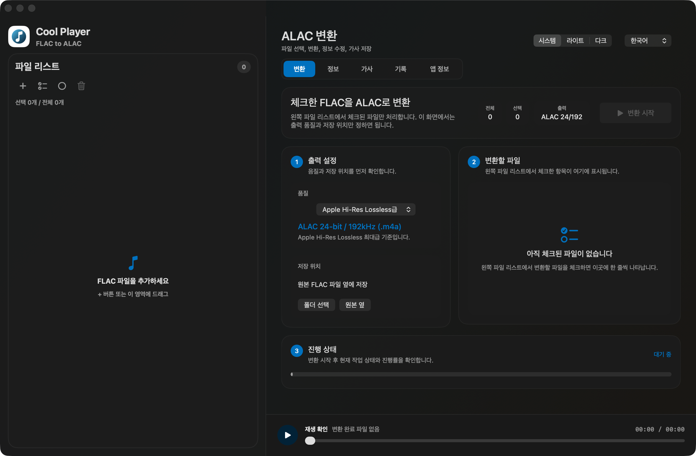
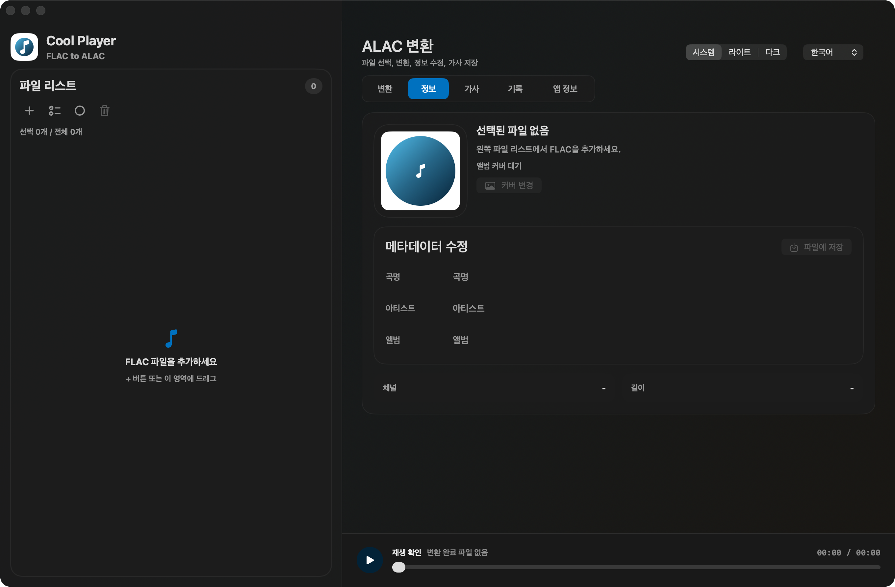
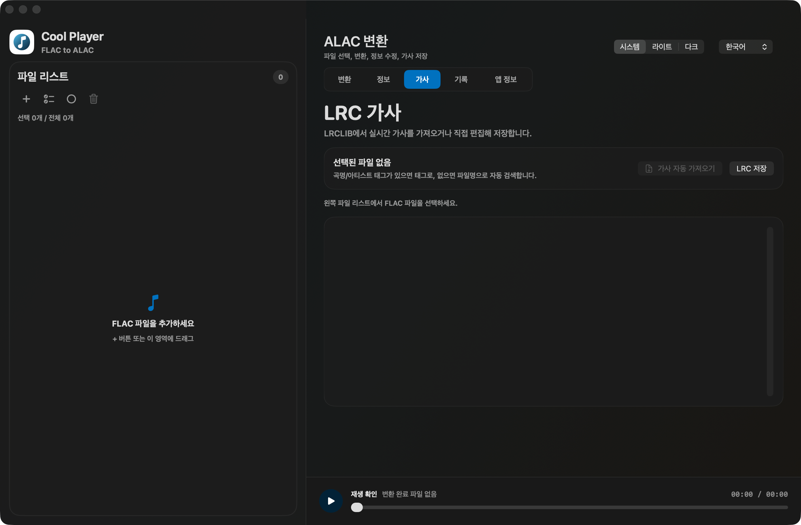
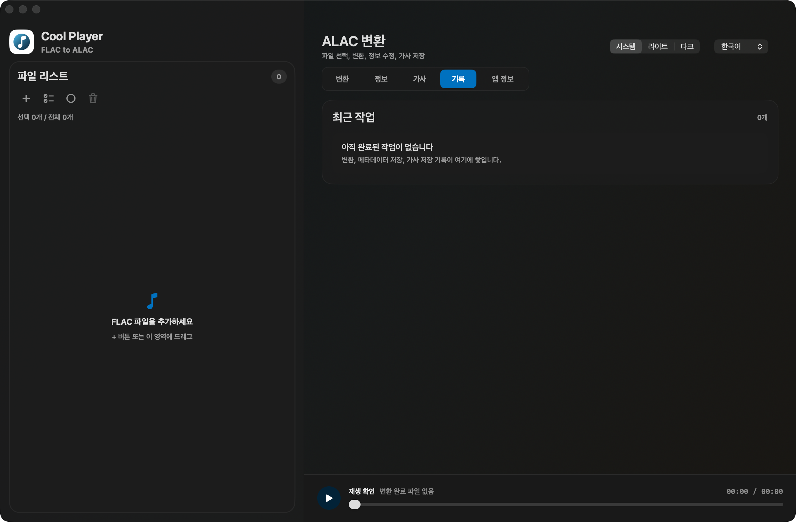

01
원본 음원 분석
파일 형식, 비트 깊이, 샘플레이트를 읽어 목록에서 바로 볼 수 있게 표시합니다.
FLAC 파일을 ALAC로 변환하고,
앨범 정보와 LRC 가사까지 한 번에 정리합니다.

파일 목록을 기준으로 변환, 정보 수정, 가사 저장, 재생 확인까지 이어집니다.
파일 형식, 비트 깊이, 샘플레이트를 읽어 목록에서 바로 볼 수 있게 표시합니다.
FLAC 파일을 iPhone에서 다루기 쉬운 ALAC `.m4a` 형식으로 변환합니다.
제목, 아티스트, 앨범명, 커버 이미지를 확인하고 필요한 정보를 보완합니다.
실시간 가사를 불러오거나 편집한 뒤 원본 파일명에 맞춰 저장합니다.
FLAC을 넣고, 체크한 파일만 변환하고, 결과를 바로 재생해 확인하는 흐름입니다.
실제 앱의 오른쪽 메뉴 구성을 기준으로 각 화면에서 하는 일을 설명합니다.
왼쪽 파일 리스트에서 체크한 파일만 오른쪽 변환 화면에 표시됩니다. 출력 품질, 저장 위치, 진행 상태를 확인하고 변환을 시작합니다.
선택한 음원의 앨범 커버와 메타데이터를 확인합니다. 곡명, 아티스트, 앨범 정보를 수정하고 파일에 저장할 수 있습니다.

선택한 곡 정보를 기준으로 실시간 가사를 불러오거나 직접 편집합니다. 저장할 때는 원본 파일명과 같은 이름의 `.lrc` 파일을 기본값으로 사용합니다.

분석, 변환, 메타데이터 저장, 가사 저장 같은 작업 결과가 쌓이는 화면입니다. 여러 파일을 처리한 뒤 어떤 작업이 끝났는지 다시 확인할 수 있습니다.

고해상도 FLAC 파일을 Apple 기기에서 다루기 쉬운 ALAC 형식으로 변환하고, 변환 결과를 앱 안에서 바로 확인하는 흐름을 목표로 합니다.